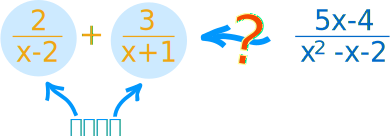
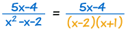
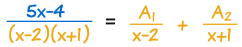
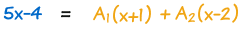
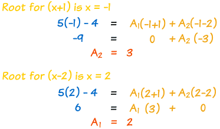
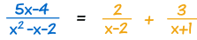
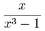
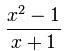

部分分式分解
一个"分解"含有多项式的分数的方法。
什么是部分分式？
我们可以直接这样做：

像这样：
2 x−2 + 3 x+1 = 2(x+1) + 3(x−2) (x−2)(x + 1)
这便可以简化为：
= 2x+2 + 3x−6 x2+x−2x−2
= 5x−4 x2−x−2
（去看使用有理式来了解更多。）
……但倒转过来怎样做？

以下我们将会探索：
怎样求一个分数的"各部分"
（"部分分式"）。
为什么需要部分分式？
首先……我们为什么需要部分分式？
因为每个部分分式都比较简单。
故此它们可以帮助我们去解比较复杂的分数。比方，在 积分学里，部分分式是非常有用的。
部分分式分解
我现在来做个示范。
这叫"部分分式分解"，像这样：
|  | 一、把下面化为因式。 | |
|  | 二、每个因式写成一个部分分式 | |
|  | 三、 全部乘以下面的式，之后式子不再是分数了 | |
四、现在来找常数！ 代入下面的式子的根（"零点"）可能会有用： |
||
|  | ||
| 得到答案了： |  | |
那相当容易！……老实说，太容易了……
……其实它可以非常困难！
现在我们详细看每一步。
真有理式
这方法只适用于真有理式，就是上面的次数是小于下面的次数的有理式。
次数指数。
- 真：上面的次数是小于下面的次数。
真：  上面的次数是 1
下面的次数是 3 - 假：上面的次数是大于或等于下面的次数。
假：  上面的次数是 2
下面的次数是 1
若式子是假的，先去做多项式长除。
把下面化为因式
你自己来把下面化为因式。看代数因式分解。
可是不要化为复数……你可能要把一些因式保留为二次式（叫"不可约二次因式"，因为再分解下去就会出现复数了）：
例子：(x2-4)(x2+4)
- x2-4 可以分解为 (x-2)(x+2)
- 但 x2+4 只可能分解为复数，所以不要把它分解
我们只能做成这样：
(x-2)(x+2)(x2+4)
故此，因式可以是
- 线性因式，和
- 不可约二次因式
的组合
当你有一个二项式，你便需要包括这部分分式：
B1x + C1（你的二项式）
有指数的因式
有时候你可能得到一个有指数的因式，像 (x-2)3……
每个从 1 以上的指数都需要一个部分分式。
像这样：
例子：
1(x−2)3
有以下的部分分式：
A1x−2 + A2(x−2)2 + A (x−2)3
二次式也可以一样：
例子：
1(x2+2x+3)2
有以下的部分分式：
B1x + C1x2+2x+3 + B2x + C2(x2+2x+3)2
有时候用根也解不了
就算用了下面部分的根（零点），你也可能得到未知的常数。
所以下一步是：
合并同类项（x 的指数是相同的项），然后以它为线性方程组来解。
开玩笑！太复杂了！好，我们来看一个例子：
复杂完整的例子
一个复杂的例子！
x2+15(x+3)2 (x2+3)
- 因为 (x+3)2 的指数是 2，它需要两项（A1 和 A2）。
- 同时，(x2+3) 是个二次式，所以也需要 Bx + C：
x2+15(x+3)2(x2+3) = A1x+3 + A2(x+3)2 + Bx + Cx2+3
全部乘以 (x+3)2(x2+3):
x2+15 = (x+3)(x2+3)A1 + (x2+3)A2 + (x+3)2(Bx + C)
在x = -3 有个根（因为 x+3=0），所以用它试试：
(-3)2+15 = 0 + ((-3)2+3)A2 + 0
简化为：
24 = 12A2
所以 A2=2
把 2 代入 A2 ：
x2+15 = (x+3)(x2+3)A1 + 2x2+6 + (x+3)2(Bx + C)
展开：
x2+15 = (x3+3x+3x2+9)A1 + 2x2+6 + (x3+6x2+9x)B + (x2+6x+9)C
合并同类项（x的指数是相同的项）：
x2+15 = x3(A1+B)+x2(3A1+6B+C+2)+x(3A1+9B+6C)+(9A1+6+9C)
把每个 x 的指数分开来写，写成线性方程组：
| x3: | 0 | = | A1+B | |
| x2: | 1 | = | 3A1+6B+C+2 | |
| x: | 0 | = | 3A1+9B+6C | |
| 常数： | 15 | = | 9A1+6+9C |
简化并整齐地重排：
| 0 | = | A1 | + | B | ||
| -1 | = | 3A1 | + | 6B | + | C |
| 0 | = | 3A1 | + | 9B | + | 6C |
| 1 | = | A1 | + | C |
好了，去解它！
你可以用你喜欢的方法去解……我就先从第二个方程减去第四个方程：
| 0 | = | A1 | + | B | ||
| -2 | = | 2A1 | + | 6B | ||
| 0 | = | 3A1 | + | 9B | + | 6C |
| 1 | = | A1 | + | C |
把第一个方程乘以 2，把结果从第二个方程减去：
| 0 | = | A1 | + | B | ||
| -2 | = | 4B | ||||
| 0 | = | 3A1 | + | 9B | + | 6C |
| 1 | = | A1 | + | C |
现在我们知道 B = -(1/2)。
所以，从第一个方程我们可以算出 A1 = +(1/2)。
接着，从第四个方程我们可以算出 C = +(1/2)。
最后结果：
| A1=1/2 | A2=2 | B=−(1/2) | C=1/2 |
我们终于得到所有部分分式了：
x2+15 (x+3)2(x2+3) = 1 2(x+3) + 2 (x+3)2 + −x + 1 2(x2+3)
唷！精疲力竭，但终于做好了！
（附注：我花了差不多
一个小时来做这个，因为
当中我犯了两个错误 ！）
总结
- 以真有理式来开始（若不是真有理式，先做多项式长除）
- 因式分解下面的式子：
- 线性因式
- 或/和"不可约"二次因式
- 每个因式（和每个因式的次方）写成一个部分分式
- 全部乘以下面的式子
- 用以下方法来解系数：
- 代入下面的式子的根
- 把每个幂（x 的次方）的系数写成一个方程，形成一个线性方程组，然后解它
- 答案就出来了！